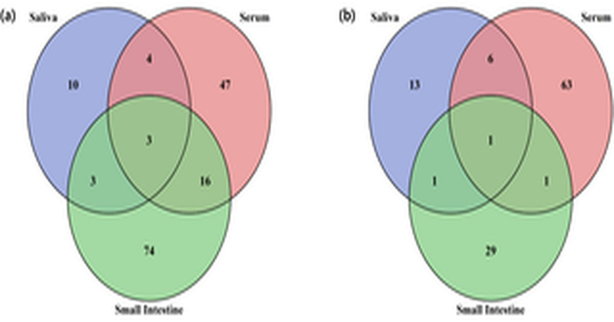

Исследование микроРНК слюны как неинвазивных биомаркеров стресса при отлучении поросят от груди: предварительное исследование
ga-Hyeon Jeong, Sung-Jea Park, Kyu-Sang Lim Weaning подвергает поросят резким изменениям в питании и окружающей среде, которые вызывают физиологический стресс.
Слюна, в отличие от образцов сыворотки или тканей, позволяет проводить повторный отбор образцов без стресса, что делает ее практичной биологической матрицей для мониторинга адаптации в раннем возрасте.
Чтобы оценить, могут ли слюнные микроРНК (микроРНК) служить неинвазивными индикаторами этих ответов, авторы профилировали экспрессию микроРНК в